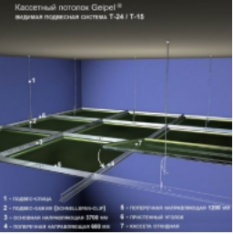

Підвісні стелі «Geipel»
Один із видів підвісних стель - касетна стеля. Стелі цього
типу виробництва фірми Geipel - вдале поєднання функціональності, якості
та краси. Вони володіють усіма необхідними характеристиками, зокрема
вологостійкістю і пожежною безпекою, а крім того, мають стильний і
сучасний вигляд. Серед касетних стель виділяються стелі з дзеркальним
покриттям, за допомогою яких можна візуально збільшити об'єм кімнати,
водночас такі стелі підходять для вологого прибирання і безпечні для
здоров'я. Встановити дзеркальну стелю можна в приміщенні будь-якого типу,
чи то житловий будинок, чи то офісна будівля, установа медичного або
навчального призначення.
Модульна конструкція стелі Geipel передбачає легкий і зручний
монтаж навіть у приміщеннях з великою площею стель, і, що особливо
важливо, просту заміну стелі без заміни самої системи - наприклад, якщо
касети зазнали якихось пошкоджень. Природно, це дасть змогу уникнути
зайвих витрат.
Який вигляд має касетна стеля Geipel?
Кожна касета - це панель з алюмінію або оцинкованої сталі, що має
квадратну форму. Незважаючи на те, що можливе замовлення касет практично
будь-якого кольору, стандартні колірні рішення - це білий, дзеркальні
срібний і золотий, срібний «металік». Покриття касет здійснюється за
допомогою якісних фарб, стійкість яких перед вологим або іншим агресивним
середовищем дає змогу їм тривалий час залишатися в прекрасному стані.
Надійні матеріали здатні витримувати монтаж і демонтаж неодноразово,
зберігаючи при цьому свій первісний вигляд. Можливі також додаткові
характеристики касет для приміщень з особливими вимогами, наприклад,
підвищена вентиляційна здатність досягається за допомогою перфорації, а
для поліпшення акустики застосовується мінеральне скловолокно. Також за
бажанням замовника в касетах можуть бути присутніми вирізи різних форм для
спеціального обладнання - труб, світильників, гучномовців тощо
Види перфорацій касетної стелі
1. Стандартна перфорація
-
.jpeg)
• Призначення відповідно до DIN: Rg 0,70 - 5,00
• Вид: отвори 0702
• Діаметр отвору: 0,7
• Відстань: 5
• Отвори: радіальні, лінійне розташування
• Вільний простір: 1,54
-
.jpeg)
• Призначення відповідно до DIN: Rg 1,50 - 4,00
• Вид: отвори 1511
• Діаметр отвору: 1,5
• Відстань: 4
• Отвори: радіальні, лінійне розташування
• Вільний простір: 11,0 %
-
.jpeg)
• Призначення відповідно до DIN: Rd 1,50 - 2,83
• Вид: отвори 1522
• Діаметр отвору: 1,5
• Відстань: 2,83
• Отвори: радіальні, лінійне розташування
• Вільний простір: 22%
-
.jpeg)
• Призначення відповідно до DIN: Rd 1,80 - 3,52
• Вид: отвори 1821
• Діаметр отвору: 1,8
• Відстань: 3,52
• Отвори: радіальні, лінійне розташування
• Вільний простір: 20,77%
-
.jpeg)
• Призначення відповідно до DIN: Rg 2,00 - 6,00
• Вид: отвори 2009
• Діаметр отвору: 2
• Відстань: 6
• Отвори: радіальні, лінійне розташування
• Вільний простір: 8,7%
Переваги касетної стелі Geipel

Рівень якості Для виробництва
підвісних касетних стель Geipel використовують високоякісні метали -
оцинковану сталь і алюміній. Товщину металу, яка забезпечує найкращі
експлуатаційні властивості касетних стель, визначають за допомогою
складних інженерних розрахунків. Поверхні касет у процесі виготовлення
надають ідеальної гладкості, що робить стелю особливо функціональною
і, звісно, стильною та красивою.
Міцність і надійність
-
Для виробництва касет Geipel використовується метал, захищений від
корозії і здатний витримувати вплив агресивного середовища, тому
стелі Geipel служать протягом багатьох років.
-
Колір касет зберігається протягом усього терміну експлуатації, тому
що порошкове покриття, яке наносять на них, стійке до пошкоджень і
впливу ультрафіолетових променів.
-
Касети Geipel з білим покриттям здатні знижувати енерговитрати за
рахунок того, що їхня поверхня може розсіювати і відбивати світло,
стаючи додатковим джерелом світла